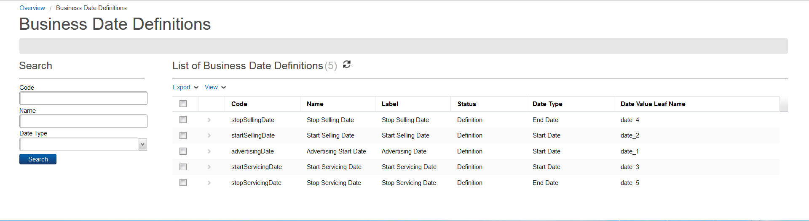
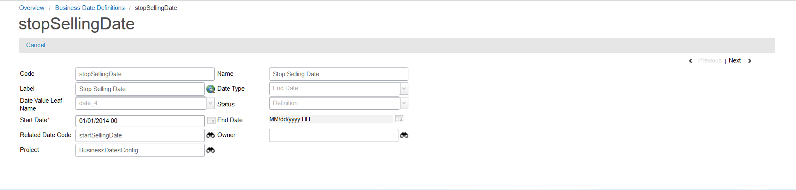

Business Date Definition
The business date definition comprises the business date model, which is a concept that represents a set of dates.
You can access business date definitions by clicking Technical Configuration > Business Date Definition from the Quick Start menu.

The Business Date Definitions page contains the following fields:
| Field |
Description |
| Code |
This field denotes the code for the business date definition. |
| Name |
This field represents the name of the business date definition. |
| Label |
This field contains the field's visual label displayed at runtime, which is used in the application user interface. |
| Status |
This field denotes a list of available statuses for the business date definition (for example, Definition and Active). |
| Date Type |
This field contains the date type for the business date definition. |
| Date Value Leaf Name |
This field indicates the date value variable name associated with the business date definition. |
Double-clicking any business date model from the list allows you to view its details:

The Business Date Definitions details page contains the following fields:
| Field |
Description |
| Code |
This field denotes the code for the business date definition. |
| Name |
This field represents the name of the business date definition. |
| Label |
This field contains the field's visual label displayed at runtime, which is used in the application user interface. |
| Date Type |
This field contains the date type for the business date definition. |
| Date Value Leaf Name |
This field indicates the date value variable name associated with the business date definition. |
| Status |
This field denotes a list of available statuses for the business date definition (for example, Definition and Active). |
| Start Date |
This field represents the start (effective) date that the business date definition is available. Refer to Start and End dates for details. |
| End Date |
This field indicates the date when the business date definition is no longer effective. Refer to Start and End dates for details. |
| Related Date Code |
This field shows the date code that is related to the one that you are currently viewing. |
| Owner |
This field represents the position of the user who created the project. Only users with the same position or higher can access the project data. This value cannot be changed. Refer to Domains for more information. |
| Project |
This field indicates with which project the business date definition is associated. Each object is assigned to a project. This field defaults to the active or opened project when the business date definition is first created. |
|